0 · What this is, and why it exists
Read this part once, the day before. You are not memorising it — you are making sure that when someone asks "but what is it for?", you have an answer that does not begin with a technical word.
The law, in plain English
In 2023 India passed the Digital Personal Data Protection Act. In 2025 the rules that go with it were notified. Together they say something simple, and quite demanding:
If your company holds information about a person, that person has rights over it — and you have to be able to prove you respected them.
The Act gives two things names, and it is worth using them, because everything in this software is built around the pair:
Data Principal
The person the data is about. You. Me. A customer. The law puts them at the centre and gives them rights.
Data Fiduciary
The company holding that data. Not an "owner" — a fiduciary, someone trusted to look after something that belongs to someone else.
That word choice is the whole point. A company does not own your phone number. It is holding it on trust, for a reason you were told about, for as long as that reason lasts.
What the Act then demands of that company:
- Tell people, before you take it. In clear language, itemised — not "we may collect certain information".
- Have a lawful reason for every use. Either the person consented, or the law lists your specific situation. Nothing else counts.
- Make withdrawing as easy as agreeing. If saying yes took one click, saying no cannot take a phone call and a form.
- Answer people who ask. What do you hold about me? Correct it. Erase it. Within a deadline, not eventually.
- Protect children by default. No tracking, no targeted advertising at under-18s. A parent's permission does not unlock it.
- Report a breach immediately. Tell every affected person, and tell the Data Protection Board — the initial report at once, the detailed one within 72 hours of finding out.
- Do not keep it forever. When the reason ends, the data goes — but never before a statutory minimum.
- Be able to prove all of the above. Not describe it. Prove it, with records.
The penalty for getting it badly wrong runs to ₹250 crore for a single failure to protect data.
So what does this software actually do?
Here is the problem it solves, in one picture. A mid-sized Indian retailer does not have "a customer database". It has four or five of them, bought at different times, run by different teams:
- The marketing team's mailing tool, where you are
customer_email. - The sales team's CRM, where you are
primary_email. - The support desk, where you are
user_ref. - The online shop, where you are
customer_code.
You are one person. To that company you are four rows, spelled four different ways, and nobody has ever tried to line them up. So when you write in and say "tell me everything you hold about me", the honest answer is that they do not know. And the Act gives them a deadline to find out.
This platform is what sits on top of those systems and makes the company able to answer. It:
- Reads the existing systems, without ever writing back to them.
- Works out which rows are the same human being — and, crucially, refuses to guess when it is not sure.
- Records why the company is allowed to hold each thing, and who else it was given to.
- Tells each person what is held, in their language, and lets them agree or refuse purpose by purpose.
- Handles their requests against deadlines the company configured from the actual rules — not deadlines a programmer typed into the code.
- Runs the clock when there is a breach, and produces the reports the regulator asks for.
- Records everything in a log that cannot be quietly edited afterwards.
Installing software does not make a company compliant, and this platform never claims otherwise. It does the part software can do: find the data, keep the record, run the clock, and produce the evidence. The judgement calls stay with a human, and the platform is careful to ask for them rather than invent them.
The one-paragraph version
"India's data protection law says a company has to know what personal data it holds, why it is allowed to hold it, and who it shared it with — and has to prove it. Most companies genuinely cannot answer that, because the same customer sits in four different systems under four different spellings. This platform reads those systems without changing them, works out who is who, and then runs everything the law requires on top: the notices, the consent, the requests, the deadlines, the breach clock, and an audit log nobody can edit afterwards. Let me show you."
Where this demo came from
The demonstration you are about to give is not improvised. It follows the project's own definition of done — a 34-step walkthrough written into the specification before any code existed, in DPDP_MVP1_FOUNDATION_AND_DISCOVERY.md and DPDP_MVP2_COMPLIANCE_OPERATIONS.md. Every screen in Part 2 is one or more of those steps. Appendix A maps them one to one, so if an evaluator asks for step 27 by number, you can go straight to it.
1 · From a cold laptop to the app on screen
Roughly four minutes, almost all of it waiting. You will double-click one icon and watch a window fill with sentences.
Before the audience arrives
- Switch the laptop on and log in as normal.
- Close anything you do not need. The demo uses a web browser and nothing else.
- Go to the Desktop — minimise everything, or press the show-desktop key. The eight buttons are there; they are also in the folder the platform was unzipped into.
- Start Docker Desktop if it is not already running, and wait until it says Engine running. Button 1 checks for it and stops rather than half-starting.
The eight buttons
There are eight controls, numbered in the order you use them. Numbering is deliberate: you never have to remember which is which, only what comes next. Button 0 is the one-time setup and will already have been run on a demonstration laptop.
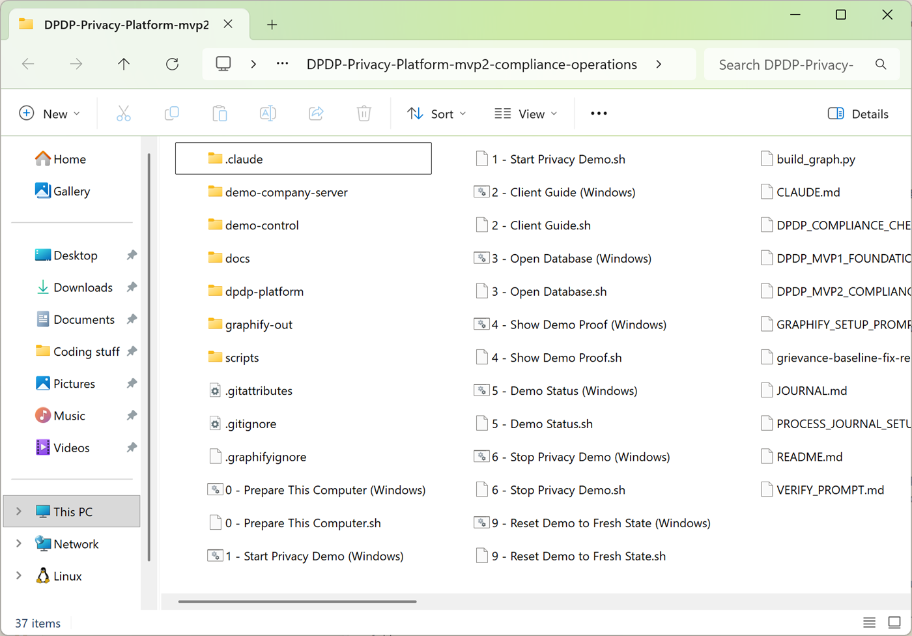
| Button | What it does | How long |
|---|---|---|
| 0 Prepare This Computer | One-time setup on a newly downloaded copy: checks the computer, installs, builds and creates the sample workspace. | ~15 min |
| 1 Start Privacy Demo | Starts the database and the app, then opens the website for you. | ~2 min |
| 2 Client Guide | Opens the self-guided client version of this walkthrough. | instant |
| 3 Open Database | Opens a table browser so you can look inside the database itself. | ~20 sec |
| 4 Show Demo Proof | Counts the live data and shows the numbers in a window. | ~10 sec |
| 5 Demo Status | Tells you what is running and what is not. | ~5 sec |
| 6 Stop Privacy Demo | Shuts everything down. Your data is kept. | ~20 sec |
| 9 Reset Demo to Fresh State | Destroys all demo data and rebuilds it from scratch. Asks first. | ~12 min |
If a blue “Windows protected your PC” box appears, choose More info, then Run anyway. If a Windows Firewall prompt appears, accept it — the platform runs entirely on this computer. Both appear once per file, never again.
Starting it
Double-click 1 Start Privacy Demo
Double-click the icon. A black window opens and starts writing lines of plain English. Do not close it. It is the demo running.
Lines appearing one by one: the database starting, the backend coming up, the website coming up. Each one ends with a short confirmation. It finishes with a list of addresses and the sign-in details.
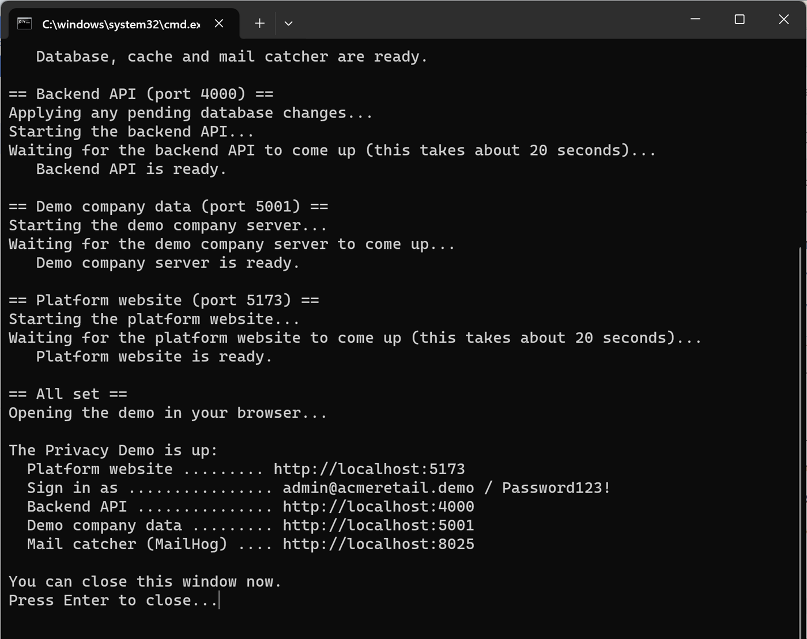
Your browser should open by itself at http://localhost:5173. If it does not, open a browser and type that address. If the page will not load, wait twenty seconds and refresh once — the website takes a moment longer than the rest.
Signing in
Sign in as the company's administrator
Type admin@acmeretail.demo and Password123!, then press Sign in.
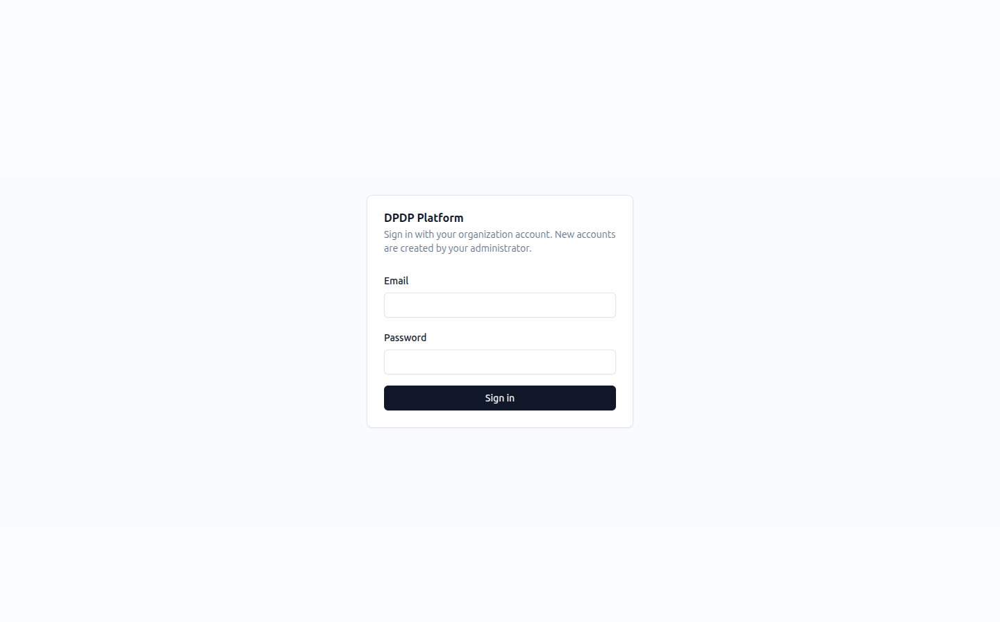
There are two ways into this system and they are deliberately separate. Staff sign in here. Members of the public sign in at /me/login, and a staff pass will not open that door — nor the other way round. You will use both during the demo.
Open a second browser tab at http://localhost:5173/me/login and leave it there. Halfway through the demo you will switch to it to show a customer's own view, and having it ready saves an awkward pause.
2 · The demonstration
Twelve acts, roughly ninety seconds each. Every screen already has real data in it — nothing here asks you to fill in a form while people watch. Each act tells you what to click, what will appear, a line you can say, and which part of the law it answers.
Do is the click. You will see is what should appear — if it does not, you have the wrong page. Say is a line you can use as-is or reword. In law is there for the question that always comes.
Four systems, one company
~90 secFrom the left menu, open Data Sources.
Four connected systems — Marketing, Sales, Support, E-commerce — each showing when it last synchronised and how many records came back.
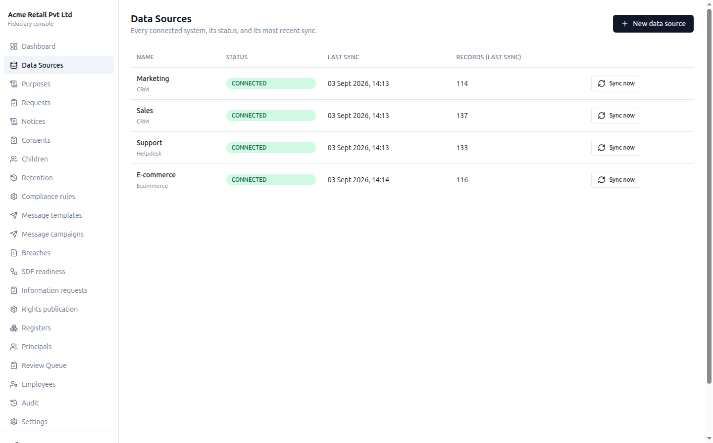
"This is the realistic starting point. Four systems, bought at different times, none of them talking to each other. The marketing tool calls your email customer_email; the shop calls it just email. Someone had to sit down and say which field means what — and that mapping is recorded here, not hidden in code."
"Notice the connection is read-only. The platform never writes back into a company's own systems. If this went wrong, it cannot corrupt the business."
Spec steps 4 and 5. A company cannot describe what it holds unless it first knows where it is. This is the foundation of the Record of Processing the Act requires.
500 records become 327 people
~2 minClick Dashboard in the left menu. Pause on the four numbers at the top.
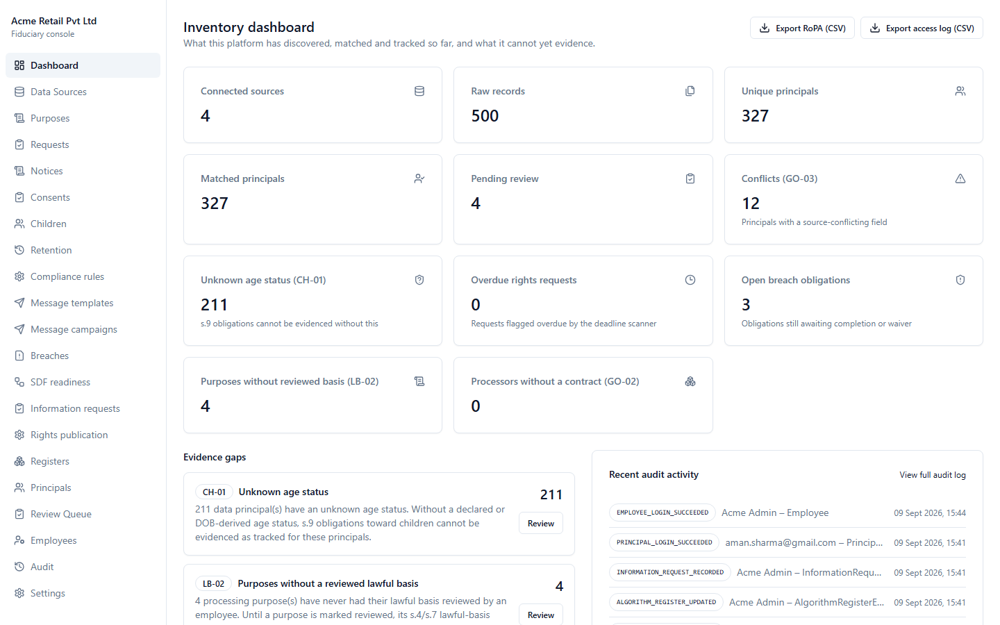
"Five hundred rows went in. Three hundred and twenty-seven human beings came out. The difference is the same person appearing in three or four systems under different spellings — Aman Sharma in one, A. Sharma in another, a different phone number in a third."
"And twelve places where two systems disagree about the same fact — different cities for the same customer. The company did not know that before this morning. Now it is a list somebody can work through."
Spec step 6, and the whole of the MVP 1 definition of done. Also section 8(4): a Data Fiduciary must ensure personal data is complete, accurate and consistent. You cannot fix a contradiction you have never seen.
The bit where it refuses to guess
~2 minOpen Principals and search for Rahul Verma.
Two separate people, with different reference numbers — not one merged record.
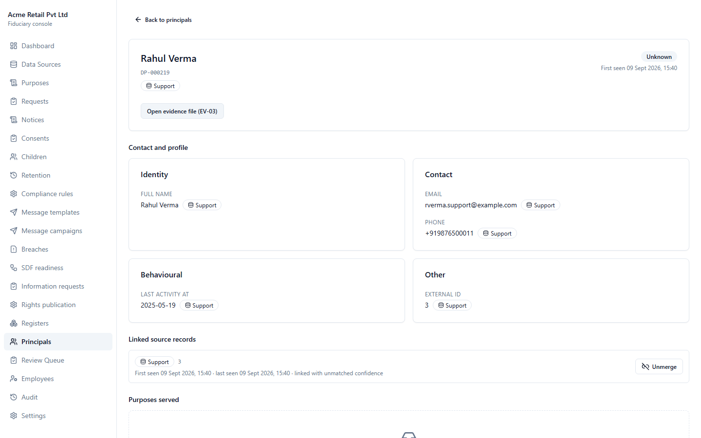
"Two different men, both called Rahul Verma. A careless system merges these — and then one of them can see the other's order history. That is a data breach the company created itself, out of tidiness. This platform will only merge on evidence: a matching email, a matching phone. A shared name is not evidence."
Open Review Queue from the left menu.
Four pairs waiting for a human decision, each showing exactly what matched and what did not.
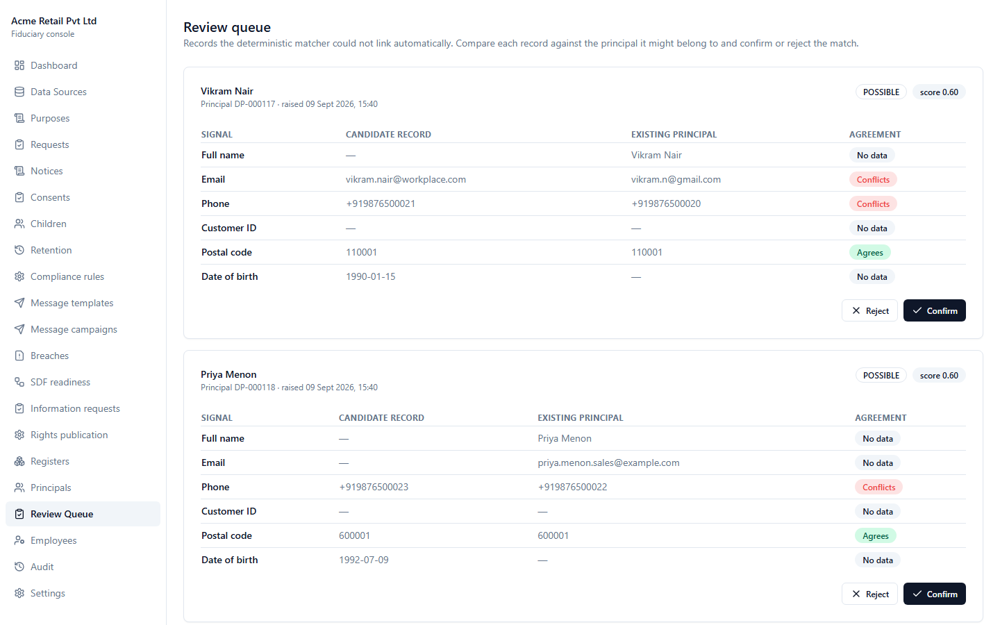
"When it genuinely cannot tell, it does not pick. It stops and asks. Four pairs are sitting here waiting for a person — and if that person gets it wrong, the merge can be undone without losing a single byte of the original records."
Spec step 6 again, and requirement GO-03. This is the difference between software that is confident and software that is honest.
Deadlines that come from rules, not from code
~90 secOpen Settings → Compliance Rules.
A list of deadlines, each with a legal citation next to it, and most marked Not yet reviewed.
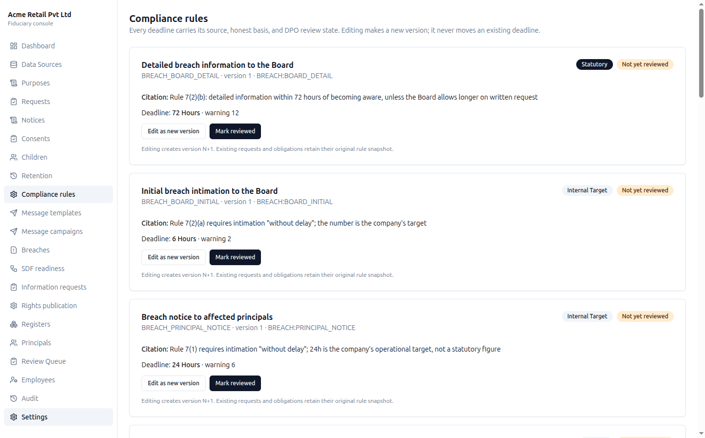
"This is the screen I would look at first if I were evaluating this. Every deadline the system enforces is listed here as data, with the rule it came from written next to it. Not one of these numbers is buried in the code. When the rules change — and they will — this is a screen someone edits, not a release someone ships."
"And they all say Not yet reviewed. The platform ships defaults so nobody starts from a blank page, but it will not pretend a lawyer has approved them. Somebody has to click confirm, and their name goes on it."
Click Confirm on one rule to show the badge change and the reviewer's name appear. Safe to do live.
Spec step 7. The platform's own rule: no legal deadline may appear as a number in the source code. Every one is configuration, cited and reviewable.
Telling people what you hold
~2 minOpen Notices and click the published marketing notice.
A published notice listing each item of personal data by name, what it is used for, and three links — how to withdraw, how to exercise rights, how to complain to the Board.
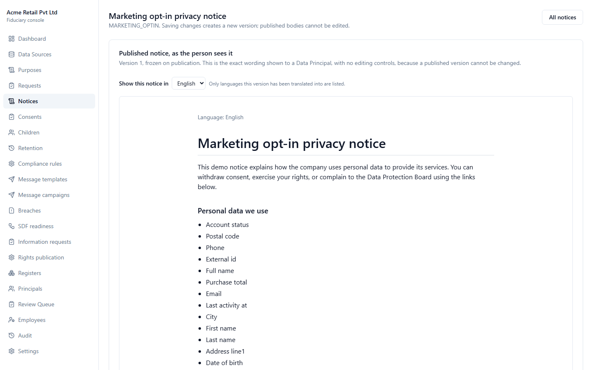
"The Act does not accept 'we may collect certain information'. It wants the list, itemised. So this notice is not typed by hand — it is generated from the field mappings you saw in the first screen. If the company starts collecting date of birth tomorrow, the notice knows."
Try to edit the published version.
It refuses. You can only create a new version.
"Once published, it is frozen — the database itself refuses the edit, not just the screen. That matters, because consent means nothing unless you can prove what the person was actually shown at the moment they agreed. If the wording could be quietly changed afterwards, every consent record in the system would be worthless."
Switch the notice to Hindi.
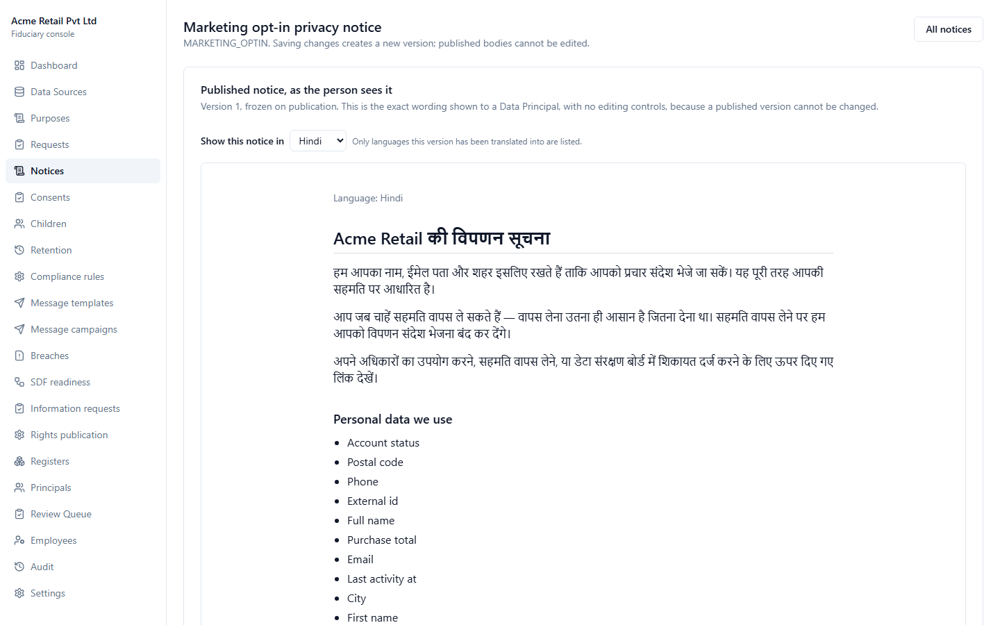
"The Act says a person may ask for the notice in any language in the Eighth Schedule — twenty-two of them. Note that this is a human translation the company supplied and takes responsibility for. The platform never machine-translates a legal notice."
Spec step 8. Rule 3(a) — the notice must stand on its own. Rule 3(b) — itemised. Rule 3(c) — the three links. Section 5(3) — the language choice.
Now her side of it
~2 minSwitch to your second browser tab at /me/login. Sign in as aman.sharma@gmail.com / Password123!.
A completely different, much simpler interface — the Data Principal's own portal.
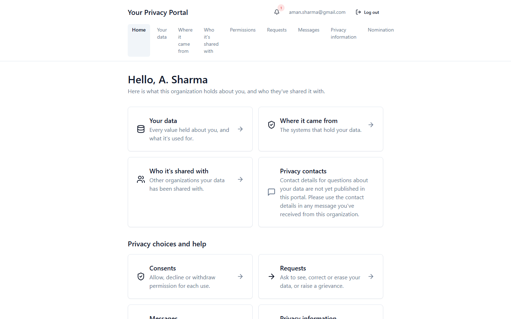
"This is Aman. He is not an employee — he is a customer. And this is the half of the law that companies usually forget: the person has to be able to see this for themselves, not by writing a letter and waiting."
Click through My Data, then Where it came from, then Who has it.
"Every single value tells him which of the company's systems it came from. His phone number is here because it is in the Sales CRM and the support desk. That is lineage, and it is what makes the next screen possible."
"And this is the question almost no company can answer: who else has my data? Not a generic list of 'trusted partners' — the actual recipients who hold his record, worked out from which systems his data is in and which of those feed which sharing arrangement."
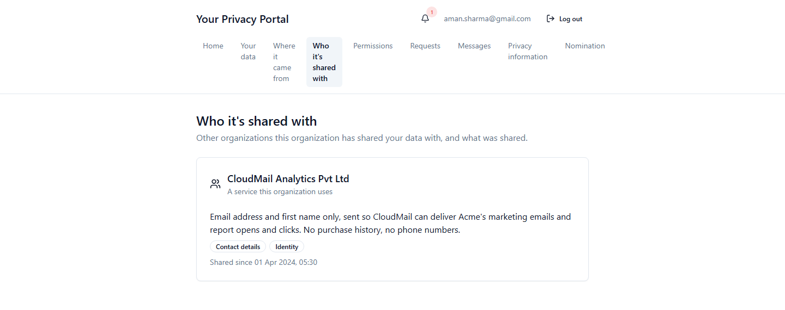
Open Messages, then Nomination.
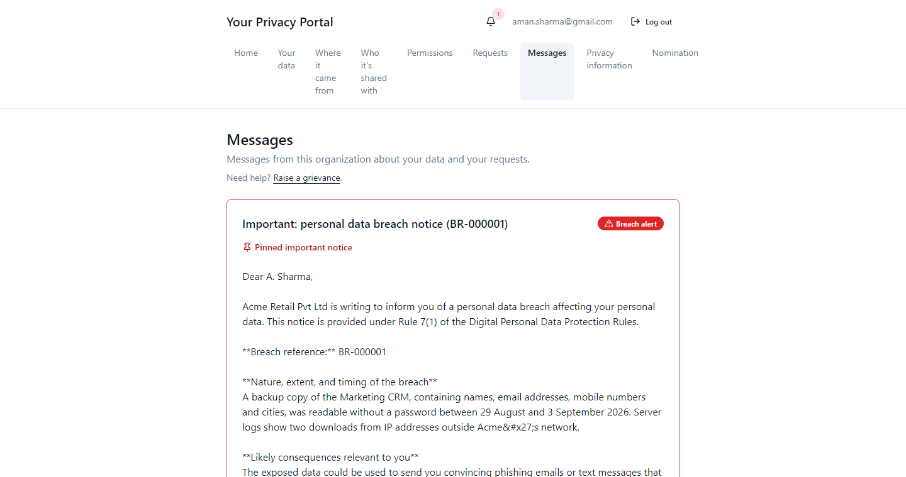
"Whatever the company sends him lands here as well as in his inbox, so there is one record of what he was actually told, and when. You will see the breach notice arrive here later in the demo."
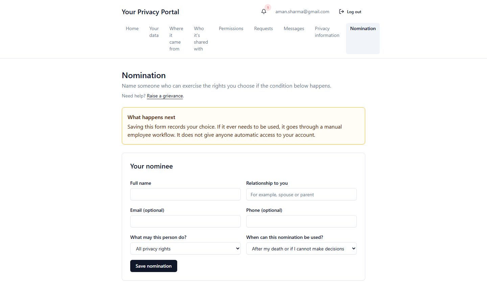
"And this one is Section 14, which most people have not read. He can name someone to exercise his rights if he dies or cannot act for himself. Note what the page itself says: saving this gives nobody access to his account. If it is ever used, an employee works through it."
Spec steps 9, 10 and 32. Section 11(1) — the right to a summary of the data and the identities of those it was shared with. Section 14 — nomination.
If asked "can he see anyone else's data?" — no, and it is structural rather than a filter someone remembered to write. Every database query in the system is scoped to the signed-in identity at a level below the application code.
Asking for a correction
~2 minStill as Aman, open My Requests.
Two requests he has already raised — a correction and an access request — each with a reference and a deadline. Open the correction.
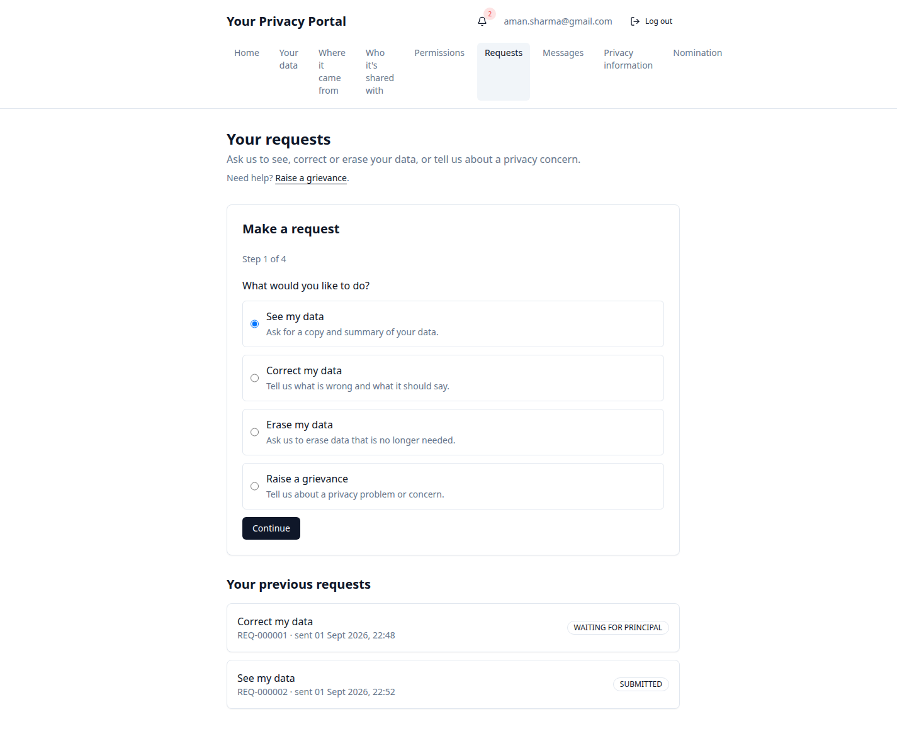
"Aman noticed the company has an old phone number for him — one that now belongs to somebody else. He asked them to fix it. He can see it was received, he can see who is dealing with it, and he can see the date they owe him an answer by."
Switch back to the staff tab. Open Requests and click the same reference.
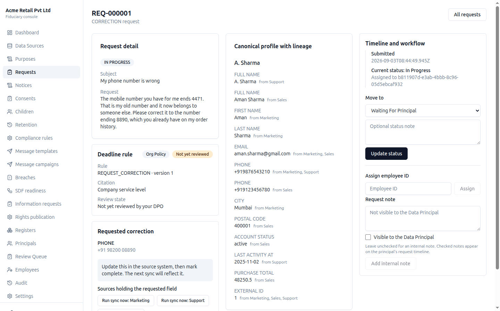
"Same request, the company's side. The deadline is not a number somebody typed — it was calculated from the rule you saw earlier, and the citation is right there. The staff notes are split: this one is visible to Aman, this one is internal and he cannot see it. Both are in the audit log."
Spec steps 11, 12 and 13. Section 12 — the right to correction and erasure. Section 13 — the right to grievance redressal within a published period.
Consent, and taking it back
~2 minOpen Consents on the staff side.
A dashboard per purpose: granted, refused, withdrawn, and not yet asked.
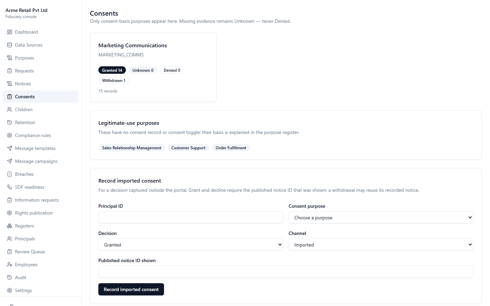
"Consent here is not one switch. It is per purpose. You can agree to order updates and refuse marketing, and the system holds both at once — which is exactly what the Act requires and what most cookie banners quietly refuse to do."
Click into a purpose and open one consent record.
"And every record is frozen to the exact version of the notice the person was shown at that moment. Not the current wording — the wording on the day. Otherwise the company is claiming consent to something the person never read."
Point out the withdrawn entry (Neha Rao), then open Retention.
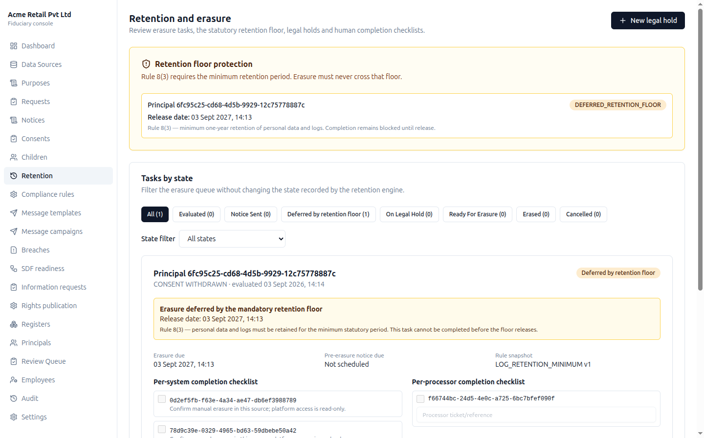
"Neha withdrew her consent. One click, exactly as many as it took to give it — the Act is explicit that withdrawing cannot be harder than agreeing. And the moment she did, the system created an erasure task on its own."
"But look — it has not run. It is deferred, with a release date and a citation. Because there is a rule that says certain records must be kept for at least a year. So the law pushes in both directions at once, and the platform holds both: erase this, but not yet, and here is exactly why."
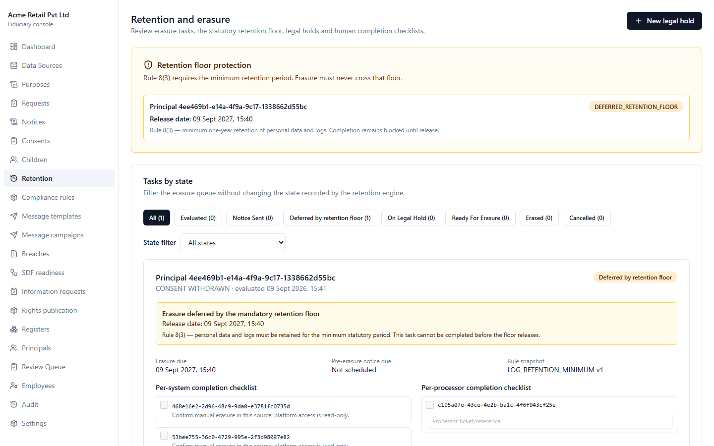
"Every task sits in a state you can point at — evaluated, notice sent, deferred, on legal hold, ready, erased, cancelled. Nothing is a silent failure. And before anything is erased, the person gets the forty-eight hour notice the rules require. If they sign in during that window, the task is cancelled under Rule 8(2) instead. Both of those are scheduled jobs, so neither depends on somebody remembering."
Spec steps 15 to 18, 29 and 30. Section 6(4) and 6(6) — withdrawal as easy as giving, and consequences follow. Rule 8(2) — the pre-erasure notice and its cancellation. Rule 8(3) — the retention floor.
Protecting a child, even from a parent's permission
~2 minOpen Children.
Six under-18s found in the data, and one with a guardian recorded and verified.
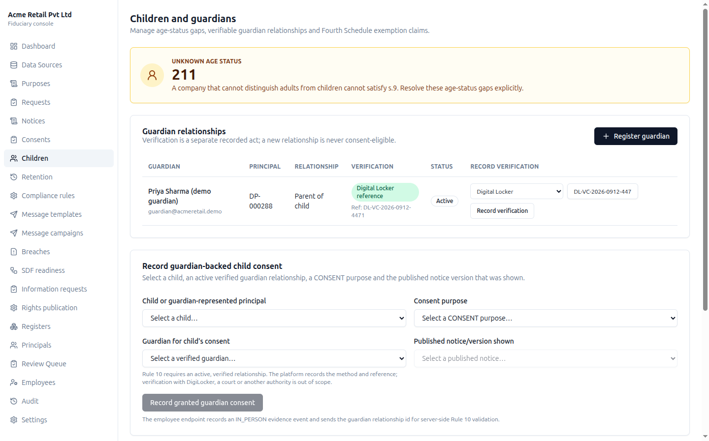
"Six of those 327 people are under eighteen. Nobody told the system that — it worked it out from the dates of birth in the online shop's data. For one of them, a parent has been registered and verified, and that verification was recorded with the method and the reference number."
Open Messaging → Campaigns and click the Monsoon sale campaign, then its recipients list.
Three outcomes side by side — delivered, held back for no consent, and held back as children.
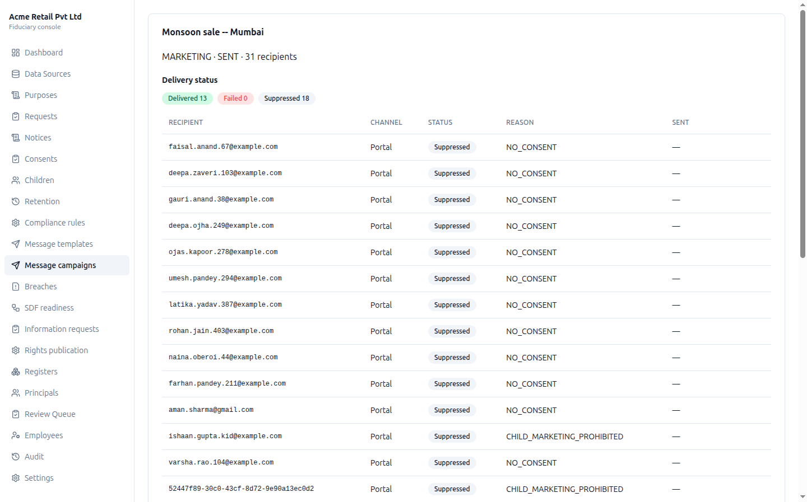
"A marketing campaign went out. Some people got it, because they had consented. Some were held back because they had not. And these six were held back for a completely different reason: child, marketing prohibited."
"Here is the part I would emphasise. The parent did consent. It is recorded, right there. And the platform still refused to send — because the Act does not let a guardian consent to advertising aimed at a child. That is not a setting somebody remembered to switch on. It is a refusal built into the send path, so it cannot be forgotten."
Spec steps 19 and 20. Section 9(1) — verifiable guardian consent. Section 9(3) — no tracking or targeted advertising directed at children, full stop.
A breach, with the regulator's clock already running
~3 minOpen Breaches and click BR-000001.
An incident with two different times recorded, a list of affected people, and three live countdowns.
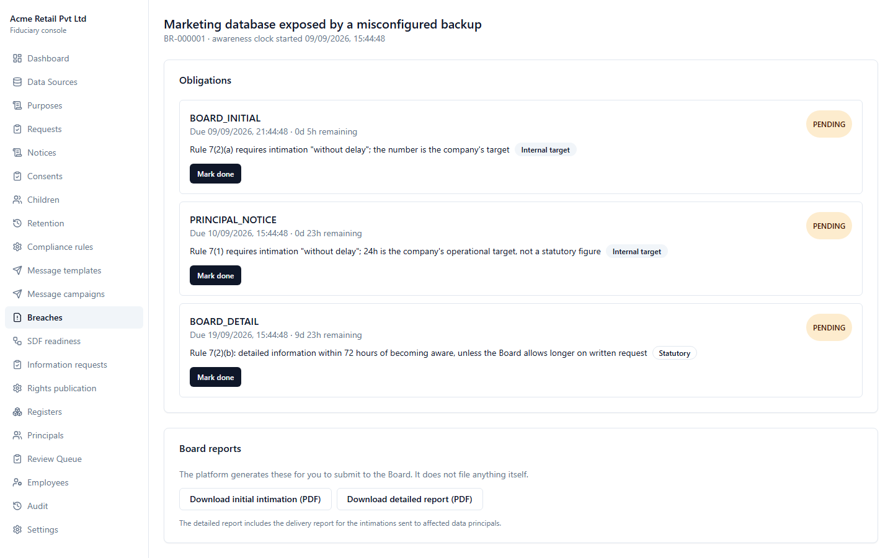
"A nightly backup of the marketing database was left readable without a password. Note that the system records two separate times: when it happened, and when the company found out. They are days apart, and it is the second one that starts every legal clock."
Scroll to the countdowns.
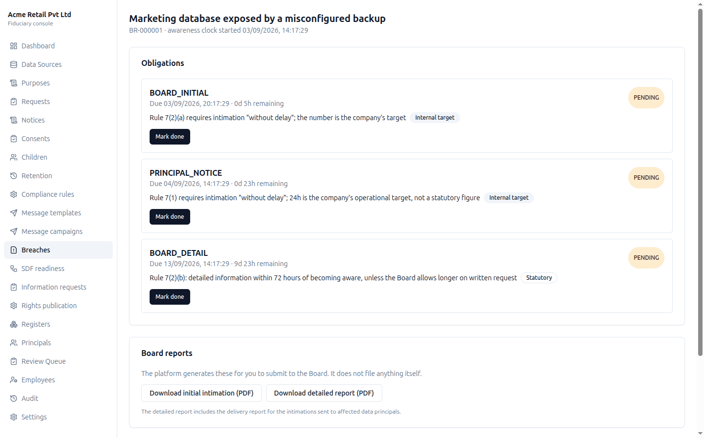
"Three separate obligations, three separate clocks, each labelled with the rule behind it. Tell the affected people. Tell the Board immediately. Give the Board the detailed report within seventy-two hours of finding out. These are ticking right now, in front of you."
Point at the recorded Board extension.
"The Board granted an extension on the detailed report. Watch what moved: only that one clock. The other two are untouched, and the original date is still shown, struck through, with the Board's reference beside it. The company cannot quietly grant itself more time."
Open the breach notice that was sent, showing its six sections.
"Every affected person got this, and the rules specify exactly six things it must contain — what happened, what it means for you, what we have done, what you should do, who to contact, and the reference. The platform will not send a breach notice with one of them missing. It refuses, and tells you which one."
Switch to the portal tab. As Aman, show the pinned breach notice. Then mention Sara Khan does not have one.
"Aman was affected, so it is pinned at the top of his messages. Sara Khan was not, and has nothing — because the recipient list came from the committed affected list, previewed and counted before anyone pressed send."
"And it took two people. The person who drafted this notice was not allowed to approve it. That is enforced, not encouraged."
Spec steps 21 to 28. Section 8(6) — intimate the Board and each affected principal. Rule 7(1) — the six elements. Rule 7(2) — at once, and in detail within 72 hours.
The request the customer must not be told about
~90 secOpen Information Requests.
A Government request naming Aman, marked with a non-disclosure direction.
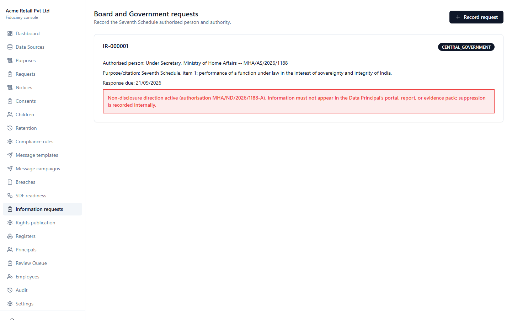
"The Government has asked for information about a named person, and attached a direction saying he must not be told. That is lawful, and it puts the company in a genuinely awkward position: it has to honour the direction while still keeping honest records."
Switch to Aman's portal. Show his messages, his requests, and his downloaded evidence file.
"Nothing. It is not in his messages, not in his requests, not in his access report, and not in his evidence file. It is genuinely invisible to him."
Back on the staff side, open Audit Log and find it.
"But it is right here in the audit log, in full, with a timestamp. Hidden from him, not hidden from the record. If the Board ever audits this company, the fact that it happened — and that it was correctly suppressed — is provable."
Spec step 32. Section 36 — the power to call for information. Rule 23(2) — the non-disclosure direction.
Proving all of it
~2 minOpen Audit Log, filter to today, and press Verify hash chain.
A confirmation that the chain is valid, and how many events were checked.
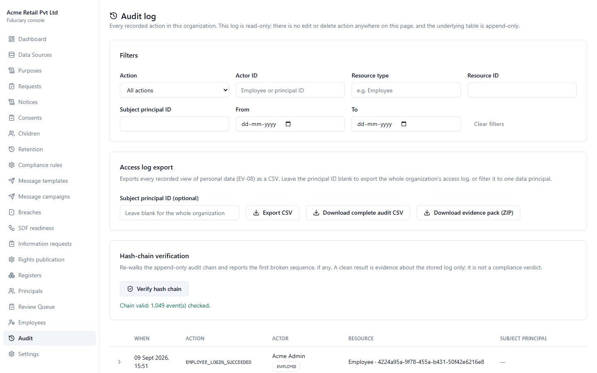
"Every single thing you have watched in the last twenty minutes is in here. And each entry carries a fingerprint of the one before it, so they form a chain. Delete one, change one word in one, and every entry after it stops matching. The database itself refuses updates and deletes on this table — it is not a rule the application politely follows."
"That button just re-checked the whole chain, live, and said it is intact."
Open a principal and download their evidence file. Then download the full evidence pack.
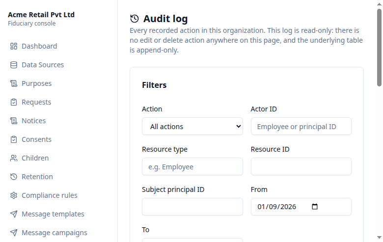
"And this is what all of it was for. If the Board comes asking, the company does not write a report. It presses a button, and out comes the evidence: what was held, why it was allowed, who it was shared with, what each person was told, what they agreed to, what they asked for, and when they were answered. That is the difference between saying you are compliant and being able to show it."
Spec steps 33 and 34. Section 8(9) and the evidentiary requirements throughout — the obligation is not just to comply, but to be able to demonstrate compliance.
"Every screen you have seen is real. The data came out of four separate systems this morning. Nothing was typed in to make the demo look good, and where the platform could not be sure of something, it said so rather than guessing. That was the design goal: a system a company could actually put in front of a regulator."
3 · Looking inside the database
If someone says "yes, but is that real, or is the screen just drawing it?" — this is the answer. Two buttons, no SQL, no terminal.
Button 4 — the numbers
Double-click 4 Show Demo Proof
A window of live counts, read from the database at the moment you clicked, grouped by what each one proves. Every number in Part 2 of this runbook appears here.
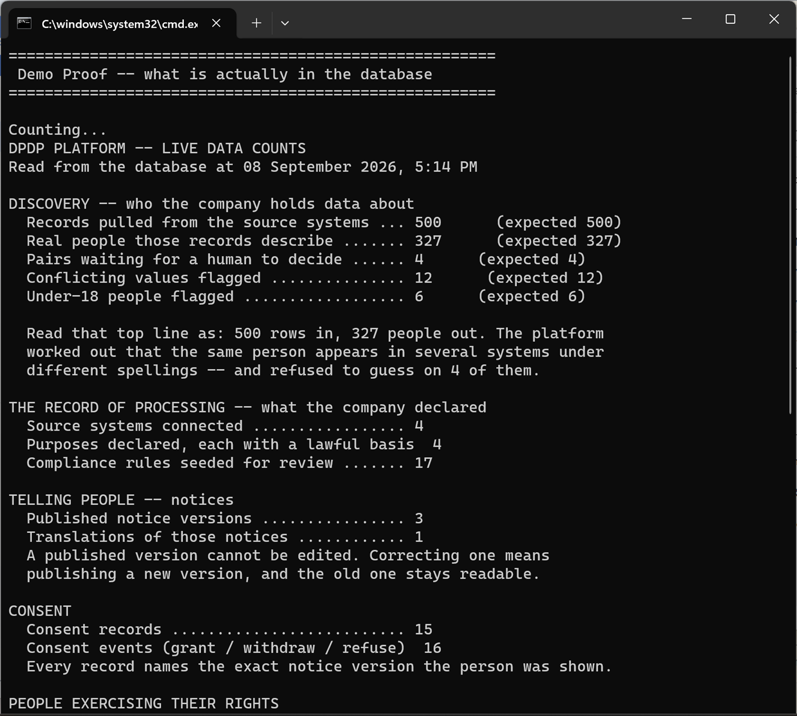
"That is not the app telling you about itself. That is a direct count out of the database, taken just now, next to the number we expected. If the two disagreed, you would see it."
Button 3 — the tables themselves
Double-click 3 Open Database
A browser tab with every table listed down the left. Click one and its rows appear on the right, like a spreadsheet.
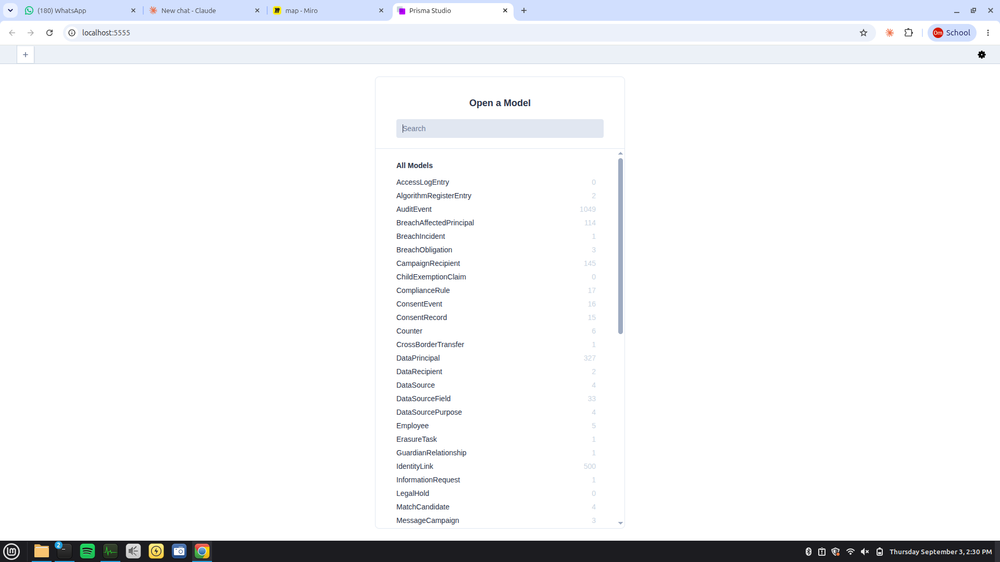
The five worth showing, in this order:
| Table | What a row is | Why show it |
|---|---|---|
SourceRecord | One untouched row exactly as it came out of a source system. | All 500 are still here, unedited. Nothing was thrown away. |
DataPrincipal | One real human being. | 327 of them. This is the number on the dashboard. |
NoticeVersion | One published notice, frozen. | The exact wording people were shown, preserved. |
ConsentRecord | One person's decision about one purpose. | Each points at the notice version they saw. |
AuditEvent | One thing that happened. | Each carries the hash of the one before it. This is the chain. |
"Scroll to the hash column. Each row carries a fingerprint that includes the row above it. That is why nobody can delete an inconvenient line — everything after it would stop matching, and the verify button would say so."
This browser can edit rows as well as show them. Look, do not touch. If you change something by accident, button 9 rebuilds everything — but that takes twelve minutes you may not have.
4 · Shutting down
Twenty seconds. Nothing you have shown is lost.
Double-click 6 Stop Privacy Demo
Each part reported as stopped, then Everything is stopped, then a prompt to close the window.
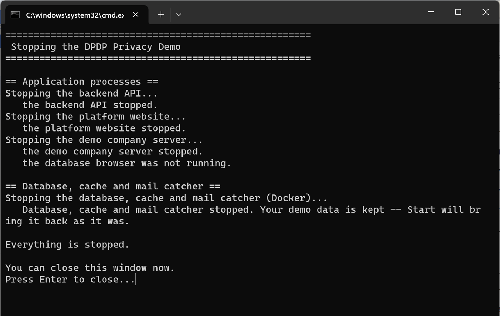
The shutdown message says this, and it is literal. The database is paused, not emptied. Press button 1 tomorrow and every screen comes back exactly as you left it — same breach, same requests, same consents. The only thing that erases data is button 9.
Afterwards it is safe to close the browser tabs, close the black windows, and shut the laptop down normally. Nothing needs saving.
Double-click 5 Demo Status. Everything should read DOWN. That is what a clean shutdown looks like.
Appendix A · All 34 specification steps
The project's definition of done is a 34-step walkthrough. The demo in Part 2 covers all of it, but compresses it into twelve acts. If an evaluator asks for a step by number, this is where it lives.
| Step | What it requires | Where in the demo | State |
|---|---|---|---|
| 1 | Start the platform | Part 1 | Live |
| 2 | Log in as the Acme admin | Part 1 | Live |
| 3 | Declare purposes with lawful bases | Act 1 → Purposes | Pre-filled |
| 4 | Add four endpoints, test, map fields, attach purposes | Act 1 | Pre-filled |
| 5 | Register processor, sharing activity, transfer | Act 1 → Registers | Pre-filled |
| 6 | Sync: 500 → 327, 4 pending, 2 Rahuls apart, 12 conflicts, 6 under-18 | Acts 2 and 3 | Pre-filled |
| 7 | Review seeded compliance rules; 120-day grievance refused | Act 4 | Live (one click) |
| 8 | Build, publish, translate a notice; published edit refused | Act 5 | Pre-filled |
| 9 | Log into the portal as Aman | Act 6 | Live |
| 10 | Read the notice in English, then Hindi | Acts 5 and 6 | Live |
| 11 | Submit a correction request | Act 7 | Pre-filled |
| 12 | Employee sees reference, deadline, rule and citation | Act 7 | Pre-filled |
| 13 | Assign it, move to In Progress, principal's timeline updates | Act 7 | Pre-filled |
| 14 | Access request, and the full access report | Acts 7 and 12 | Pre-filled |
| 15 | Build an audience, preview the count, send a consent request | Act 8 | Pre-filled |
| 16 | Recipient reads the exact notice and grants consent | Act 8 | Pre-filled |
| 17 | The decision appears on the company dashboard immediately | Act 8 | Pre-filled |
| 18 | Withdraw in the same number of clicks; erasure task appears | Act 8 | Pre-filled |
| 19 | Register a guardian, verify them, record consent | Act 9 | Pre-filled |
| 20 | Child suppressed from marketing despite guardian consent | Act 9 | Pre-filled |
| 21 | Create a breach with occurred and aware timestamps | Act 10 | Pre-filled |
| 22 | Preview the affected count before committing | Act 10 | Pre-filled |
| 23 | Notice contains all six Rule 7(1) elements | Act 10 | Pre-filled |
| 24 | A second employee approves it, then it sends | Act 10 | Pre-filled |
| 25 | Affected principal sees it pinned; unaffected sees nothing | Act 10 | Pre-filled |
| 26 | Three countdowns, each cited and basis-labelled | Act 10 | Pre-filled, live clocks |
| 27 | Board extension moves only the detailed-report clock | Act 10 | Pre-filled |
| 28 | Download the Board detailed report with delivery evidence | Act 10 / Act 12 | Pre-filled |
| 29 | Withdrawal erasure task deferred by the one-year floor | Act 8 | Pre-filled |
| 30 | Pre-erasure notice; the person logs in; the task cancels | — | See note below |
| 31 | Mark SDF; cycles, algorithm register, localisation gaps | Ask-me screen | Pre-filled |
| 32 | Government request with non-disclosure, suppressed but audited | Act 11 | Pre-filled |
| 33 | Verify today's audit hash chain | Act 12 | Live |
| 34 | Download the evidence file and the full evidence pack | Act 12 | Live |
Step 30 depends on a scheduled background job reaching a pre-erasure notice and then a login cancelling it. That timing cannot be guaranteed inside a twenty-minute window, so it is not on the demo path. If asked, say so plainly — the mechanism is on the Retention page and the cancellation behaviour is covered in the project's evaluation record. Claiming it live and having it not fire is worse than not claiming it.
Two extra screens worth knowing about
Neither is in the twelve acts. Both are one click away, and both answer a question an evaluator is likely to ask.
SDF readiness — left menu, spec step 31
Acme is marked a Significant Data Fiduciary, so this page carries the extra duties: the assessment and audit cycle (its length comes from the configured rule, never a constant in the code), the register of algorithms that operate on personal data with their risk reviews and mitigations, and the localisation gaps.
Say, if asked: "It flags this for a human. It never blocks a transfer and never marks a review as done by itself — which is the honest behaviour, because neither of those is a decision software should be making."
Registers — left menu, spec step 5
The processors, sharing activities, cross-border transfers, retention policies and security measures behind everything else. This is where the "who has my data" answer in Act 6 comes from.
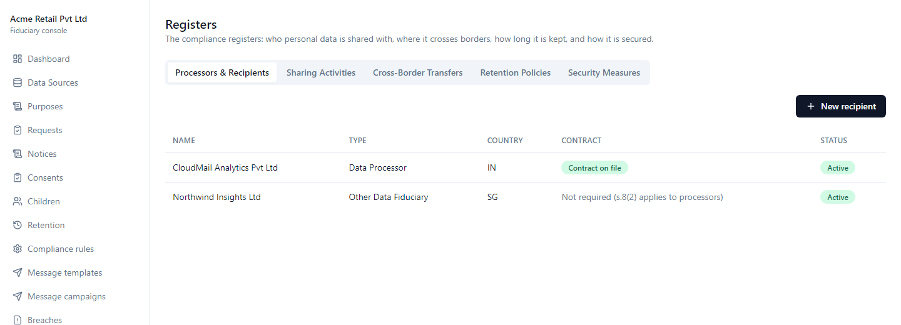
Appendix B · Every login
Every account below uses the same password: Password123!
Staff — sign in at http://localhost:5173/login
Password123!
Password123!
Password123!
Password123!
Password123!
Members of the public — sign in at http://localhost:5173/me/login
Password123!
Password123!
Password123!
Password123!
Password123!
Some earlier notes mention aman@example.demo. That account does not exist. The real one is aman.sharma@gmail.com.
Addresses
| What | Address |
|---|---|
| The platform website | http://localhost:5173 |
| The public portal | http://localhost:5173/me/login |
| Database browser (button 3) | http://localhost:5555 |
| Mail catcher — every email the demo sends | http://localhost:8025 |
| API documentation, if a technical evaluator asks | http://localhost:4000/api/docs |
The mail catcher is worth remembering. If anyone doubts that a message really went out, open localhost:8025 and there it is — the consent requests, the breach notices, all of them.
Appendix C · Rebuilding from zero
Button 9 destroys everything and builds it again from the four source systems. You do not need it for a normal demo — but it is the most convincing thing in the box, so it is worth knowing when to use it.
What it actually does
It asks you to confirm, then works through nine steps, narrating each one:
- Stops the running app.
- Throws the database away and rebuilds it from the project's own migrations.
- Reseeds the four demo source systems with their fixed dataset.
- Rebuilds and restarts everything.
- Connects all four systems through the real API, maps the fields, and synchronises them one at a time.
- Completes the compliance seed — notices and portal accounts.
- Records the one governance decision the accuracy dashboard needs from a human.
- Prints the numbers it actually observed.
- Fills in the demo data: the notices, requests, consents, guardian, campaigns, breach, SDF declaration and Government request.
Nothing in there is a shortcut. Every artifact is created through the same API the website uses, and if the platform would refuse a human doing it by hand, it refuses the script too.
Which of the two to do
The night before — recommended
Press 9 the evening before, let it finish, check the numbers, then press 6. On the day you press 1 and you are ready in two minutes. This is the default and it is what this runbook assumes.
Live, as the opening act
Genuinely impressive — they watch 500 rows become 327 people from an empty database. But you are standing there for twelve minutes. Only do this if you have the time and the room is patient.
How to tell it worked
When it finishes, step 8 prints the numbers. They should read:
Then step 9 prints a checklist of everything it staged, and finally it signs in to the public portal for real, to prove that door opens. If any line in that checklist says [FAILED], a screen in the demo will be empty. Run button 9 again before you rely on it.
The principal count has occasionally come out as 328 rather than 327 across resets. The reset script prints what it actually found rather than what it hoped for, and warns about this. If you see 328, the demo still works — but say the number on the screen, not the number in this document.
Appendix D · If something looks wrong
The demo is staged so this should not happen. If it does, almost everything is one button.
| What you see | What to do |
|---|---|
| The website will not load at all | Wait 20 seconds and refresh once. Still nothing: 5 Demo Status to see what is down, then 1 Start Privacy Demo. |
| A page is blank or spinning | Refresh the page. The website reloads instantly; only the first start is slow. |
| Sign-in says the details are wrong | Check the front door. Staff go to /login, members of the public to /me/login. The passwords are all Password123! — the exclamation mark is part of it. |
| A screen that should have data is empty | Something did not stage. Finish the demo without it, then run 9 Reset afterwards. |
| The startup window shows an error | It stays open on purpose and names a log folder. Close it, run 6 Stop, then 1 Start again. |
| A button flashes and disappears | Git for Windows is not installed — the controls run through Git Bash. Install it from git-scm.com/download/win and try again. |
| The database browser will not open | Only works while the demo is running. Press 1 Start first. |
| Numbers differ from this document | Say what is on the screen. The reset prints observed values, never expected ones, and so should you. |
The one rule
Never press button 9 during a demo. It destroys everything and takes twelve minutes. Every other button is safe at any time.
If something goes wrong mid-sentence
Say what happened and move on. This is compliance software: an audience that has just watched you explain that the platform refuses to guess, refuses to send an incomplete breach notice, and refuses to let a company quietly edit a published notice, will think considerably more of you for saying "that screen has not loaded, let me come back to it" than for improvising. The whole argument of the demo is that honest software beats confident software. Be the same.